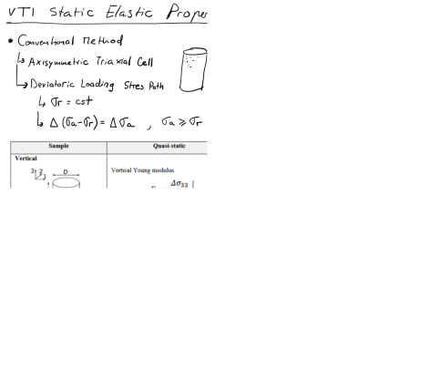

Next: 3. Hydro-mechanical coupled processes: Poro-elasticity Up: Advanced Geomechanics - Class Notes Previous: 1. Stresses in the Subsurface Contents
This document is a draft. Find hand written notes here: https://github.com/dnicolasespinoza/GeomechanicsJupyter/tree/master/ClassNotes.
Download the file LostHills.xls. We would like to know the state of stress in the subsurface and its influence on a hydraulic fracture completion. At every depth (and data-point) along the vertical well:
 .
.
 (Poisson ratio remains the same).
(Poisson ratio remains the same).
 and
and
 .
.
![\includegraphics[scale=0.60]{.././Figures/LostHills.PNG}](img44.svg) |
[To be developed] VTI compliance matrix (3 - vertical direction perpendicular to bedding):
where and
 and
and  is not related to the other parameters.
is not related to the other parameters.
In terms of stiffness coefficients:


VTI stiffness matrix (3 - vertical direction perpendicular to bedding):
or in terms of Young moduli and Poisson ratios
![$\displaystyle C_{12} = \left[ \frac{1}{(1-\nu_h) E_v - 2 \nu_v^2 E_h} \right] \left( \frac{\nu_v^2 E_h^2 + \nu_h E_h E_v}{1+\nu_h} \right) $](img57.svg)
![$\displaystyle C_{13} = \left[ \frac{1}{(1-\nu_h) E_v - 2 \nu_v^2 E_h} \right] (\nu_v E_h E_v) $](img58.svg)

The parameter is independent of all other parameters.
[To be developed]
Consider a 2D problem of a circular cavity subjected to far field effective stresses
= 12 MPa and
 = 3 MPa.
The diameter of the cavity is 0.2 m.
Rock properties: = 10 GPa,
= 3 MPa.
The diameter of the cavity is 0.2 m.
Rock properties: = 10 GPa,  = 0.20, unconfined compression strength
= 0.20, unconfined compression strength  = 30 MPa, tensile strength
= 30 MPa, tensile strength  = 2 MPa.
= 2 MPa.
 and
and
 for a domain
for a domain  = [-1m, +1m], and
= [-1m, +1m], and  = [-1m, +1m]. You may define a polar grid for
. How far does the presence of the wellbore influence stresses?
= [0.1m, 1m], = 0 m) and ( = 0 m, = [0.1 m, 1 m]). Equations in Ch. 6.2 (https://dnicolasespinoza.github.io/)
for
= [-1m, +1m]. You may define a polar grid for
. How far does the presence of the wellbore influence stresses?
= [0.1m, 1m], = 0 m) and ( = 0 m, = [0.1 m, 1 m]). Equations in Ch. 6.2 (https://dnicolasespinoza.github.io/)
for  = 0.1 m. Is there any section of the rock in shear or tensile failure? Where?
and
= 0.1 m. Is there any section of the rock in shear or tensile failure? Where?
and
 ) assuming a domain size 2 m by 2 m. Compute
and
for the same lines as in point (b), and compare with Kirsch's analytical solution. Repeat the process for a domain size 0.5 m by 0.5 m. Are there any differences? Why?
.
) assuming a domain size 2 m by 2 m. Compute
and
for the same lines as in point (b), and compare with Kirsch's analytical solution. Repeat the process for a domain size 0.5 m by 0.5 m. Are there any differences? Why?
.
Hint: An example code for 2D elasticity in FreeFEM++ and the corresponding explanation are available at https://github.com/dnicolasespinoza/GeomechanicsJupyter/: Kirsch_Shovkun.edp and FreeFEM_Tutorial_Shovkun.pdf. You can also try FreeFEM++ online here: https://freefem.org/tryit.
Consider a 2D problem of an elliptical fracture (half-length  = 10 m).
Solve the problem using just half of the domain.
Set the fracture along the left boundary of a domain: = [0 m, 100 m] and = [-50 m, 50 m], with fracture center at  (0,0) m.
This boundary will have a pressure boundary condition.
All other boundaries will have zero displacement.
Rock properties: = 30 GPa, = 0.20.
(0,0) m.
This boundary will have a pressure boundary condition.
All other boundaries will have zero displacement.
Rock properties: = 30 GPa, = 0.20.
and
imposing a fracture pressure  = 10 MPa. Plot results.
= [0, 100 m], = 0 m), Figure 2.2). How far does the influence of the fracture extend?
-displacements at the face of the fracture. Compare with analytical equation. Equations in Ch. 7.3.2 (https://dnicolasespinoza.github.io/).
= 0 m,
= 10 MPa. Plot results.
= [0, 100 m], = 0 m), Figure 2.2). How far does the influence of the fracture extend?
-displacements at the face of the fracture. Compare with analytical equation. Equations in Ch. 7.3.2 (https://dnicolasespinoza.github.io/).
= 0 m,  [-50, 50]) m, Figure 2.2) and compare with analytical Griffith solution.
[-50, 50]) m, Figure 2.2) and compare with analytical Griffith solution.
![\begin{displaymath}%compliance matrix
\left[
\begin{array}{c}
\varepsilon_{11} ...
...ma_{13} \cfrac{}{}\\
\sigma_{12} \cfrac{}{}
\end{array}\right]\end{displaymath}](img45.svg)
![\begin{displaymath}%compliance matrix
\left[
\begin{array}{c}
\sigma_{11} \\
\...
...\
2 \varepsilon_{13} \\
2 \varepsilon_{12}
\end{array}\right]\end{displaymath}](img54.svg)
![\includegraphics[scale=0.50]{.././Figures/FracModel.PNG}](img77.svg)